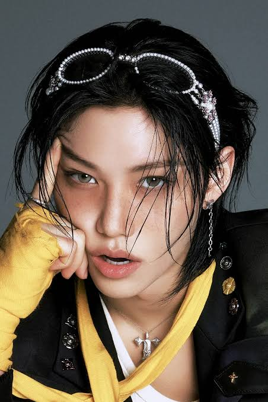

Halo kandaku
this is felix

who's he?
Felix Yonbok Lee,atau yang lebih dikenal dengan nama panggung Felix, merupakan seorang rapper, penari utama (lead dancer), dan penyanyi berbakat asal Australia yang berbasis di Korea Selatan. Lahir di Sydney, Australia pada 15 September 2000, pemuda berzodiak Virgo ini tumbuh dalam keluarga berdarah Korea murni bersama seorang kakak perempuan bernama Rachel dan adik perempuan bernama Olivia. Meskipun memiliki kendala bahasa saat pertama kali datang ke Korea Selatan untuk menjadi trainee di [JYP Entertainment], Felix berhasil mengatasi tantangan tersebut dan resmi memulai debutnya bersama grup idola Stray Kids pada 25 Maret 2018. Di dalam grup, cowok dengan tinggi badan 171 cm dan golongan darah AB ini sangat dikenal karena memiliki suara deep bass yang sangat ikonik, kemampuan menari yang energik dalam subunit DanceRacha, serta bintik-bintik wajah (freckles) alami yang menjadi daya tarik uniknya. Selain aktif di dunia musik, Felix juga melebarkan sayapnya ke dunia mode internasional sebagai duta global untuk berbagai jenama mewah ternama
BRAND
BRAND AMBASSADOR
• Louis Vuitton — Global House Ambassador (2023)
• UNICEF Korea — Goodwill Ambassador (2024)
• Gong Cha — Global Brand Ambassador (2025)
• Gentle Monster — Global Brand Ambassador (2025)
• TAMBURINS — Global Brand Ambassador (2025)
• ATiiSSU — Global Brand Ambassador (2025)
• HERA — Global Ambassador (2025)
• adidas — Brand Ambassador (2026)
• HAPPIZ — Brand Ambassador (2026)
• BB.Q — Global Ambassador (2026)